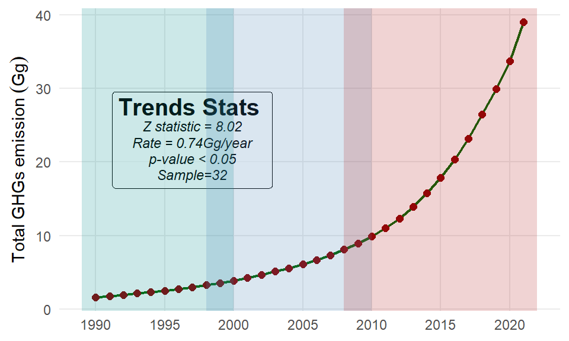
2 GHG Emmission Trends
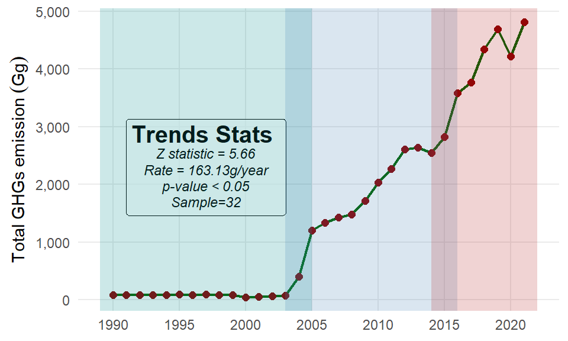
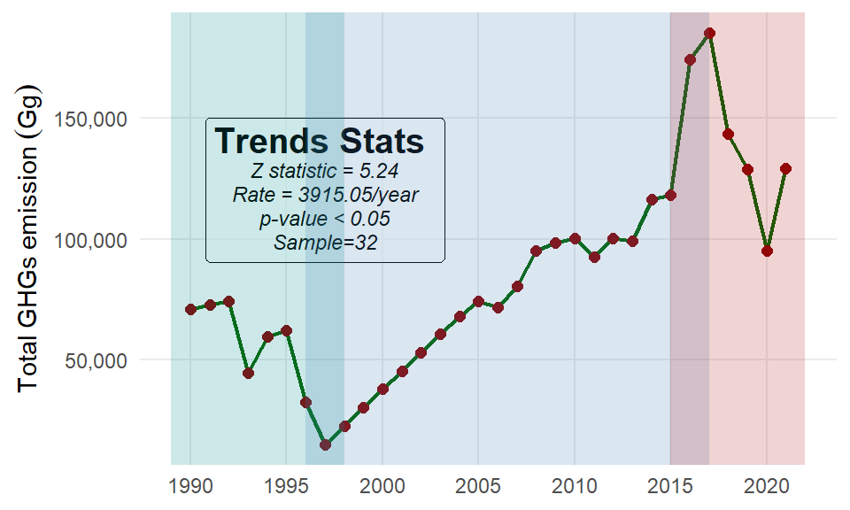
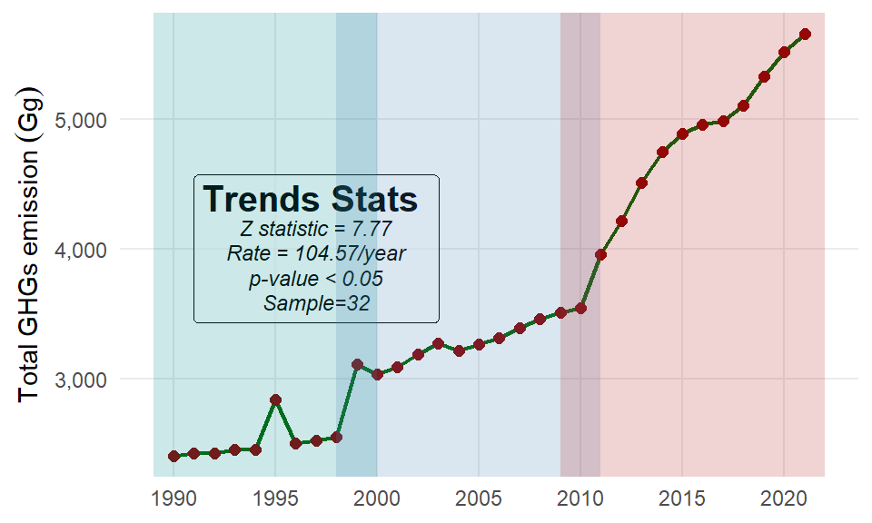
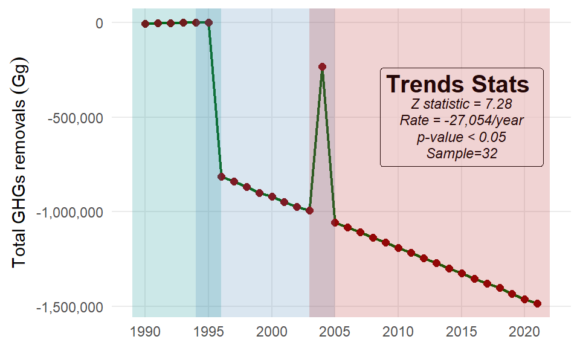
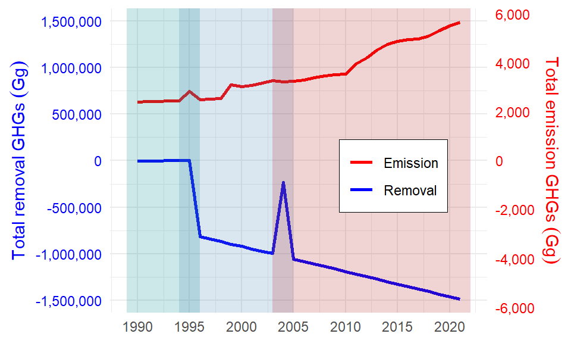
2.1 Total emissions by sector
Figure 2.7 shows share of greenhouse gas (GHG) emissions across four key sectors: AFOLU (Agriculture, Forestry, and Other Land Use), ENERGY, Industrial Processes and Product Use (IPPU), and WASTE. The percentage represents a relative contribution of each sector to the total emissions. The IPPU sector is the largest contributor of GHG emissions, accounting for 84.1% of total emissions (8,011,269 Gg), highlighting the significant role of industrial processes and product use in GHG emissions (Table 2.1). The AFOLU sector follows, contributing 15.4 (1,465,916 Gg), which reflects emissions from agricultural activities, land use changes, and forestry. The share of thhe ENERGY and WASTE sectors have minimal contributions, with 0.515% (49,023 Gg) and 0.0107% (1,016 Gg), respectively (Table 2.1). This data underscores the importance of prioritizing mitigation efforts in the IPPU and AFOLU sectors, as they dominate the emissions profile, while also considering smaller but still relevant contributions from the ENERGY and WASTE sectors.
| Sector | Total emission | Percentage share |
|---|---|---|
| IPPU | 8,011,269.45 | 84.09 |
| AFOLU | 1,465,916.44 | 15.39 |
| ENERGY | 49,022.71 | 0.51 |
| WASTE | 1,016.01 | 0.01 |
Figure 2.8 shows the trend of greenhouse gas (GHG) emissions by sector. using the Mann-Kendall trend test and Sen’s slope estimator, reveals a statistically significant downward trend emission of the AFOLU sector. This sector represents the Agriculture, Forestry, and Other Land Use has experienceda significant decreasing trend (z = −607 Gg/year, p < 0.001) over the 32 years period (Table 2.2). The estimated annual rate of -607.44 Gg per year, with a 95% confidence interval ranging from -675.30 to -540.07 Gg per year, demonstrates a consistent and substantial decline in emissions. On contrary, the Industrial Processes and Product Use (IPPU) sector (Figure 2.8), has shown a statistically significant upward trend (z = 5.2703, p-value = 1.362e-07). The estimated slope of 11,896.4 Gg per year, with a 95% confidence interval ranging from 7,924.5 to 15,099.3 Gg per year ()Table 2.2 indicates that GHG emissions from the IPPU sector are increasing over time.
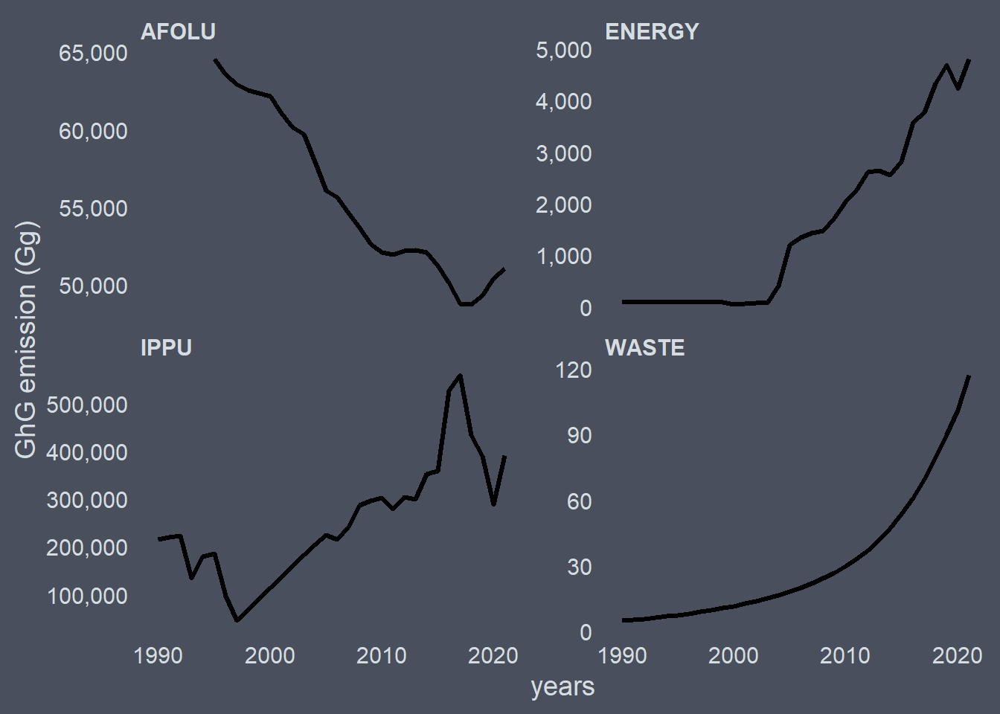
The the ENERGY sector shown in Figure 2.8 reveals a statistically significant upward trend (z = 5.6595, p-value = 1.518e-08). With a 95% confidence interval ranging from 134.38 to 196.65 Gg per year (Table 2.2), demonstrates a consistent and substantial rise in greenhouse gas (GHG) in Tanzania. This trend suggests growing energy consumption, increased fossil fuel use, or other factors driving higher emissions. Similar to IPPU, the trends of waste sector (Figure 2.8) was statistically significant upward (z = 8.0271, p-value = 9.977e-16). The estimated slope of 2.22 Gg per year, with a 95% confidence interval ranging from 1.64 to 2.96 Gg per year (Table 2.2), demonstrates a consistent and significant rise in emissions. This trend suggests growing waste generation, inadequate waste management practices, or increased methane emissions from landfills and other waste-related activities.
| Sector | N | Statistic | p-value |
GHG Parameters
|
||
|---|---|---|---|---|---|---|
| Low | Annual rate | High | ||||
| AFOLU | 32 | −7.26 | 3.9 × 10−13 | −675.30 | −607.44 | −540.07 |
| ENERGY | 32 | 5.66 | 1.5 × 10−8 | 134.38 | 163.13 | 196.65 |
| IPPU | 32 | 5.27 | 1.4 × 10−7 | 7,924.50 | 11,896.40 | 15,099.32 |
| WASTE | 32 | 8.03 | 1.0 × 10−15 | 1.64 | 2.22 | 2.96 |
2.2 Total emissions by gas
Greenhouse gas (GHG) emissions are composed of several gases, each with varying global warming potentials (GWPs) and sources. The primary gases include carbon dioxide (CO2), methane (CH₄), nitrous oxide (N₂O), and fluorinated gases (F-gases). The Figure 2.10 shows a breakdown of total GHG emissions by gas type, measured in gigagrams (Gg), along with their percentage contributions to the overall emissions. Carbon Dioxide (CO2) is the largest contributor to GHG emissions, accounting for about 85.1% of total emissions (Figure 2.10). It is primarily released through the burning of fossil fuels (e.g., coal, oil, and natural gas) for energy production (?tbl-afolu), transportation, and industrial processes (?tbl-ippu). CO2 also results from deforestation and land-use changes (?tbl-afolu).
Fluorinated Gases (F-gases) including hydrofluorocarbons (HFCs), perfluorocarbons (PFCs), and sulfur hexafluoride (SF₆), is the second-largest contributor account for a fraction (9.0%) of total emissions (Figure 2.10). F-gases are primarily used in refrigeration, air conditioning, and industrial applications. Phasing out F-gases is a key component of global climate mitigation strategies. Methane (CH4) is the third-largest contributor, making up about 5.9% of total emissions. Although it is emitted in smaller quantities compared to CO2, CH4 has a much higher global warming potential. Major sources include agriculture (?tbl-afolu), fossil fuel extraction and distribution (Table 2.4), and waste management (Table 2.7). Nitrous Oxide (N2O) contributes approximately 0.6% of total GHG emissions. It is primarily released from agricultural activities (?tbl-afolu), such as the use of synthetic fertilizers and manure management, as well as industrial processes and fossil fuel combustion (Table 2.4). N2O has a much higher global warming potential than CO2 and also contributes to ozone layer depletion.
Table 2.3 presents a total greenhouse gas (GHG) emissions across key sectors over the inventory period. CO2 is the predominant GHG across the AFOLU, ENERGY, and IPPU sectors, while CH4 is significant in AFOLU and WASTE, and HFC and N2O are specific to IPPU and AFOLU, respective.
| Sector |
Greenhouse gases (Gg)
|
|||
|---|---|---|---|---|
| CO2 | CH4 | N2O | HFC | |
| AFOLU | 902,676 | 561,348 | 1,892 | - |
| ENERGY | 49,023 | - | - | - |
| IPPU | 7,153,448 | - | - | 857,822 |
| WASTE | - | 1,016 | - | - |
2.3 Energy
Figure 2.12 illustrates CO2 emissions from the ENERGY sector between 1990 and 2021. During the 1990s, emissions remained fairly stable, between 80 and 93 Gg. A significant drop occurred in 2000, falling to 48.54 Gg, followed by a gradual recovery until 2003. From 2004 onwards, emissions surged dramatically, increasing from 397.88 Gg to 4,687.15 Gg by 2019, reflecting a rise in energy demand and reliance on fossil fuels. In 2020, emissions decreased to 4,224.38 Gg, likely as a result of the COVID-19 pandemic, but bounced back to 4,811.68 Gg in 2021 as economic activities resumed.
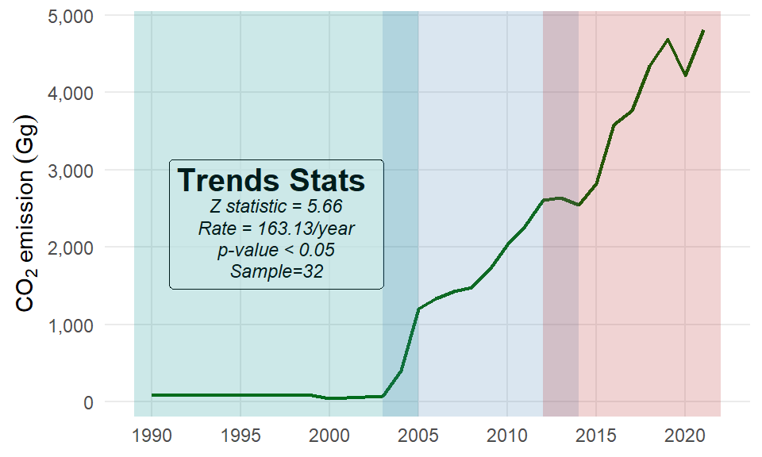
The trend in CO2 emissions from the ENERGY sector (Figure 2.12) is attributed primarily to the use of natural gas liquids, gasoline, and diesel/gas oil, which together account for 96.3% of the total CO2 emissions (Table 2.4).
| Key category | Total GHG | Percentage | Cumulative |
|---|---|---|---|
| Natural Gas Liquids | 44440.98 | 90.65 | 90.65 |
| Gas/Diesel Oil | 1940.72 | 3.96 | 94.61 |
| Motor Gasoline | 823.38 | 1.68 | 96.29 |
| Residual Fuel Oil | 607.15 | 1.24 | 97.53 |
| Other Bituminous Coal | 448.51 | 0.91 | 98.45 |
| Crude Oil | 401.50 | 0.82 | 99.26 |
| Other Kerosene | 206.65 | 0.42 | 99.69 |
| Liquefied Petroleum Gases | 88.18 | 0.18 | 99.87 |
| Jet Kerosene | 62.49 | 0.13 | 99.99 |
| Aviation Gasoline | 3.15 | 0.01 | 100.00 |
2.4 IPPU
The IPPU is major contributor of GHG in the country (Table 2.3), which emitt two major GHG gas – CO2 and HFCs. Figure 2.13 shows trend in CO2 emissions from the IPPU sector from 1990 to 2021. CO2~ emissions fluctuated significantly in the 1990s, peaking in 1992 before declining sharply in 1995, likely due to economic or industrial shifts. From 1997 CO2 emissions grew steadily, reflecting industrial expansion, and continued to rise overall through the 2015s, peaking in 2017. However, a notable drop occurred in 2020 (Figure 2.13), likely due to the COVID-19 pandemic, followed by a rebound in 2021.
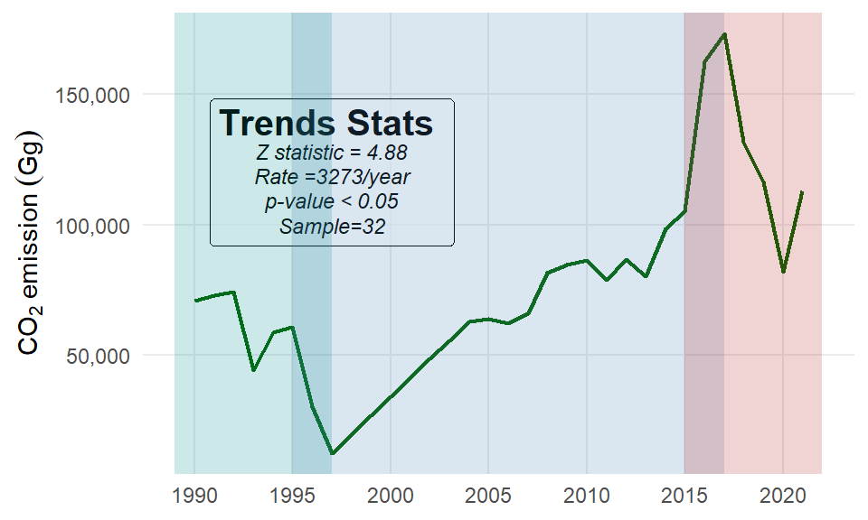
HFC emissions (Figure 2.14), rose steadily from 1990 to 2000, driven by increased use in refrigeration and air conditioning, and continued to grow until 2007. From 2008 onward, HFC emissions stabilized, with minor fluctuations, likely due to regulatory efforts to control these potent gases, and peaked in 2013 before sharp and gradual decline from 2014 through 2020. A rebound of HFC emission has been observed since 2020 and the gas emission continue to rise overtime (Figure 2.14).
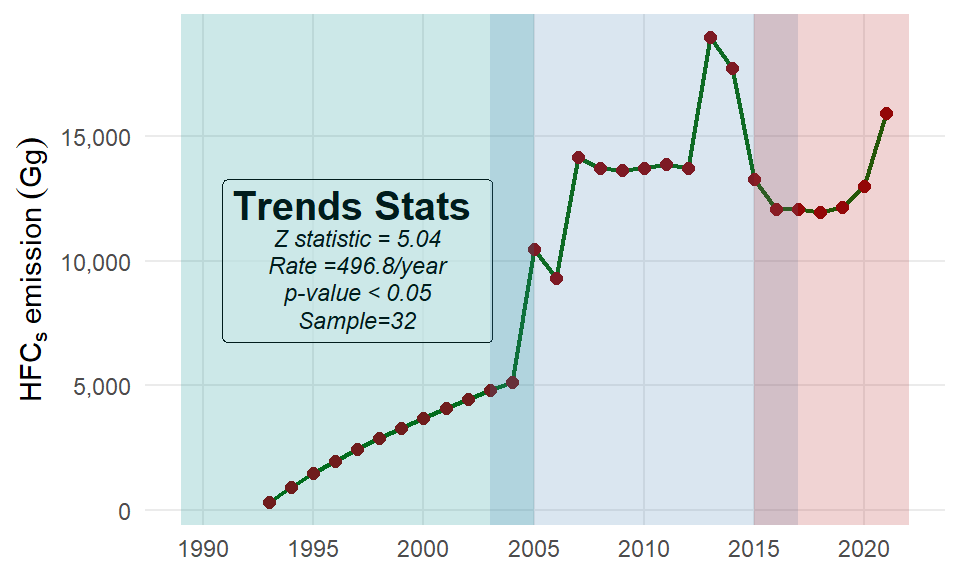
2.5 AFOLU
Figure 2.15 shows methane (CH4) emissions from 1990 to 2021. Over this period, emissions increased steadily, rising from 2,359.87 Gg in 1990 to 5,629.56 Gg in 2021, marking a 139% increase. The trend can be divided into distinct phases: initial stability from 1990 to 1994, a sharp rise in the late 1990s, fluctuations with overall growth in the 2000s, and accelerated growth from 2011 onward. The most rapid increase occurred in the last decade, driven by expanded agricultural activities (e.g., livestock and rice cultivation), increased fossil fuel production, and growing waste generation.

Similar to CH4, nitrous oxide (N2O)) emissions from the AFOLU sector show a steady upward trend over the inventory period (Figure 2.16). Emissions increased from 8.36 Gg in 1990 to 28.31 Gg in 2021, marking a 239% rise. The N2 0trend can be divided into distinct phases: initial stability in the early 1990s, moderate growth in the late 1990s and early 2000s, fluctuations with continued growth in the mid-2000s to 2016, and recent stabilization with some variability from 2017 to 2021.
The most rapid growth was observed in the early 2000s (Figure 2.16), driven by intensified agricultural activities such as increased fertilizer use, expanded crop production, and livestock manure management. While recent years show some stabilization (Figure 2.16), emissions remain at high levels, highlighting the need for sustainable agricultural practices to mitigate N₂O emissions. Similar to CH4, N2O is a potent greenhouse gas, with a global warming potential 265 times greater than CO~2`.
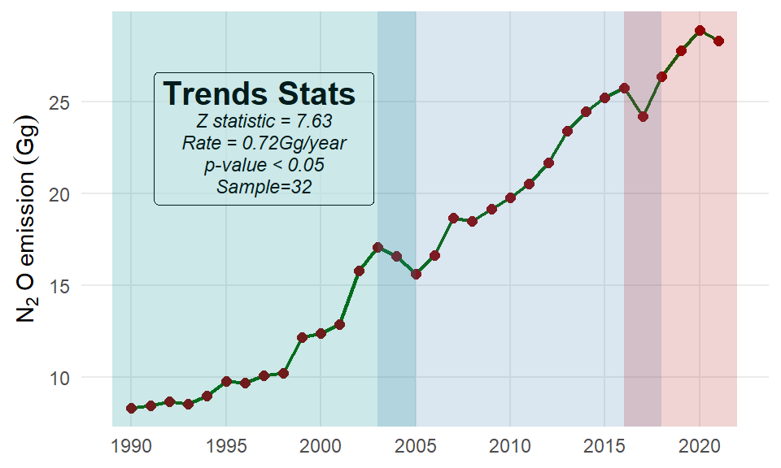
| Code | Key category | Total CH{4} (Gg) | Percentage | Cumulative |
|---|---|---|---|---|
| 3.B.2.a | Cropland Remaining Cropland | 264722.50 | 64.06 | 64.06 |
| 3.A.1 | Enteric Fermentation | 110081.25 | 26.64 | 90.69 |
| 3.B.6.b | Land Converted to Other land | 18085.93 | 4.38 | 95.07 |
| 3.B.5.b | Land Converted to Settlements | 17226.84 | 4.17 | 99.24 |
| 3.C.3 | Urea application | 1639.38 | 0.40 | 99.63 |
| 3.C.7 | Rice cultivation | 731.52 | 0.18 | 99.81 |
| 3.C.1 | Burning | 698.22 | 0.17 | 99.98 |
| 3.C.5 | Indirect N2O Emissions from managed soils | 48.82 | 0.01 | 99.99 |
| 3.C.2 | Liming | 27.47 | 0.01 | 100.00 |
| 3.C.6 | Indirect N2O Emissions from manure management | 8.29 | 0.00 | 100.00 |
The the Agricultural, Forestry and Other Land Use (AFOLU) sector plays a critical role in global climate mitigation strategies, as it contributes not only to CO~2` removal but also to biodiversity conservation and sustainable land-use practices. Figure 2.17 illustrates a consistent upward trend in CO2 removal within AFOLU sector over the inventory period. The removal of CO2 has shown significant growth, with a notable increase from 812,535 Gg in 1996 to approximately 1,482,763 Gg in 2021. This upward trend in CO2 removal is indicative of the sector’s potential to contribute significantly to global efforts aimed at achieving net-zero emissions by 2050.
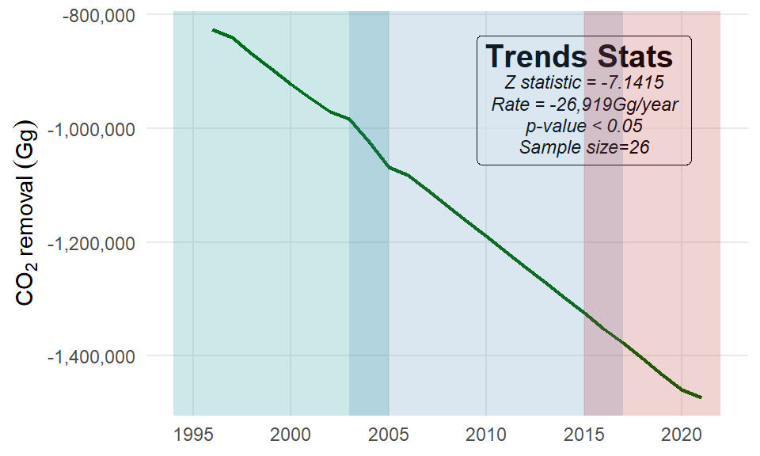
The observed increase in CO2 removal can be attributed to several factors, including improved land management practices, afforestation and reforestation efforts, and enhanced agricultural techniques that promote soil health and carbon storage (Table 2.6).
| Code | Key category | Total CH{4} (Gg) | Percentage | Cumulative |
|---|---|---|---|---|
| 3.B.1.a | Forest land Remaining Forest land | -4085089.68 | 89.27 | 89.27 |
| 3.B.3.a | Grassland Remaining Grassland | -479576.49 | 10.48 | 99.75 |
| 3.B.2.a | Cropland Remaining Cropland | -10713.77 | 0.23 | 99.98 |
| 3.D.1 | Harvested Wood Products | -872.13 | 0.02 | 100.00 |
2.6 Waste
Although the AFOLU sector (See Section 2.5) is the largest source of CH4 (methane) emissions, primarily from activities like enteric fermentation in livestock, rice cultivation, and manure management, a smaller but still significant portion of CH4 emissions comes from the WASTE sector. Figure 2.18 shows the trend of CH4 (methane) emissions from 1990 to 2021. Over this period, CH4 emissions reveal a consistent and steep upward trajectory. From 1990 to 2000, CH4 emissions increased from 1.63 Gt to 3.88 Gt, more than doubling in a decade. From 2001 onward, the growth rate accelerated significantly. Emissions rose from 4.25 Gt in 2001 to 39.01 Gt in 2021, with particularly sharp increases since 2010s (Figure 2.18).
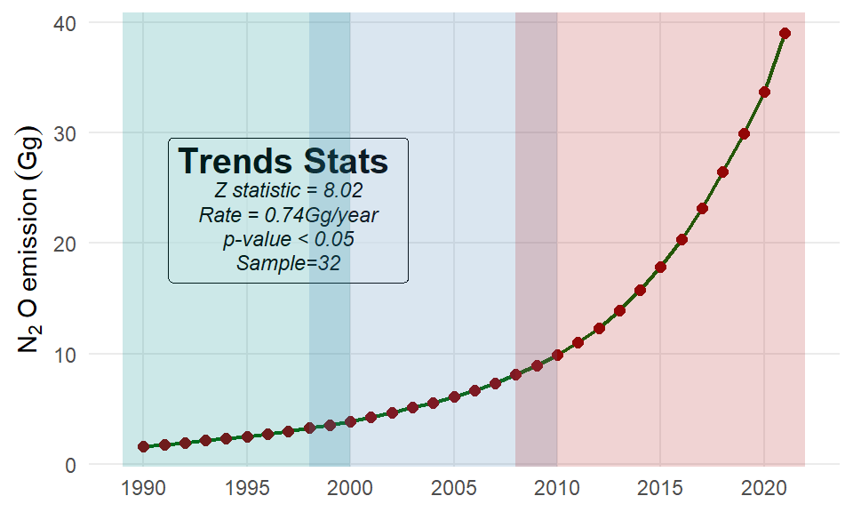
The upweard trend of CH4 presented in Figure 2.18 is contributed with unmanaged Waste Disposal and Managed Waste Disposal Sites (Table 2.7). The majority of waste-related CH4 emissions come from unmanaged waste disposal sites (e.g., open dumps or poorly regulated landfills), which account for 91.13% of waste-sector CH4 emissions (Table 2.7). These sites lack systems to capture or mitigate methane, leading to significant emissions. A smaller portion (8.87%) comes from managed waste disposal sites (Table 2.7), where methane capture systems and better waste management practices are in place.
| Code | Key category | Total CH{4} (Gg) | Percentage | Cumulative |
|---|---|---|---|---|
| 4.A.2 | Unmanaged Waste Disposal Sites | 308.62 | 91.13 | 91.13 |
| 4.A.1 | Managed Waste Disposal Sites | 30.05 | 8.87 | 100.00 |